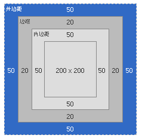

HTML（Hyper Text Mark-up Language）即超文本标记语言或超文本链接标示语言，是目前网络上应用最为广泛的语言，也是构成网页文档的主要语言。1993年IETF团队的一个草案是最初的html，并不是成型的标准。两年之后，在1995年HTML有了第二版，即HTML2.0，当时是作为RFC1866发布的。有了以上的两个历史版本，HTML的发展可谓突飞猛进。1996年HTML3.2成为W3C推荐标准。之后在1997年和1999年，作为升级版本的4.0和4.01也相继成为W3C的推荐标准。 在2000年基于HTML4.01的ISO HTML成为了国际标准化组织和国际电工委员会的标准。
1.DTD是一套关于标记符的语法规则。它是XML1.0版规格得一部分,是html文件的验证机制,属于html文件组成的一部分。
DTD：三种文档类型：S（Strict）、T（Transitional）、F（Frameset）。
Strict：如果您需要干净的标记，免于表现层的混乱，请使用此类型。请与层叠样式表（CSS）配合使用
Transitional：DTD 可包含W3C所期望移入样式表的呈现属性和元素。如果您的读者使用了不支持层叠样式表（CSS）的浏览器以至于您不得不使用 HTML 的呈现特性时使用.
Frameset:DTD应当被用于带有框架的文档。除 frameset 元素取代了body元素之外，FramesetDTD等同于Transitional DTD.
2.meta是用来在HTML文档中模拟HTTP协议的响应头报文。meta 的属性有两种：name和http-equiv
name 属性
主要用于描述网页，对应于content（网页内容），以便于搜索引擎机器人查找、分类（目前几乎所有搜索引擎都使用网上机器人自动查找meta值来给网页分类）。这其中最重要的是description（站点在搜索引擎上的描述）和keywords（分类关键词），所以应该给每页加一个meta值。比较常用的有以下几个：
"meta name="Generator" contect="""
用以说明生成工具
"meta name="KEYWords" contect="""
向搜索引擎说明你的网页的关键词；
"meta name="DEscription" contect="""
告诉搜索引擎你的站点的主要内容；
"meta name="Author" contect="你的姓名""
告诉搜索引擎你的站点的制作者
"metaname=”Robots”content=”all\none\index\noindex\follow\nofollow""
其中all：文件将被检索，且页面上的链接可以被查询；none：文件将不被检索，且页面上的链接不可以被查询;index：文件将被检索;follow：页面上的链接可以被查询;noindex：文件将不被检索，但页面上的链接可以被查询；nofollow：文件将不被检索，页面上的链接可以被查询。
http-equiv属性
"metahttp-equiv="Content-Type"contect="text/html";charset=gb_2312-80",metahttp-equiv="Content-Language"contect="zh-CN""
用以说明主页制作所使用的文字以及语言；
"meta http-equiv="Refresh" contect="n;url=http://yourlink""
定时让网页在指定的时间n内，跳转到页面http://yourlink；
"meta http-equiv="Expires" contect="Mon,12 May 2001 00:20:00GMT""
可以用于设定网页的到期时间，一旦过期则必须到服务器上重新调用。需要注意的是必须使用GMT时间格式；
"meta http-equiv="Pragma" contect="no-cache""
是用于设定禁止浏览器从本地机的缓存中调阅页面内容，设定后一旦离开网页就无法从Cache中再调出；
"meta http-equiv="set-cookie" contect="Mon,12May200100:20:00GMT""
cookie设定，若网页过期，存盘的cookie将被删除
"meta http-equiv="Pics-label" contect="""
网页等级评定，在IE的internet选项中有一项内容设置，可以防止浏览一些受限制的网站，而网站的限制级别就是通过meta属性来设置的；
"meta http-equiv="windows-Target"contect="_top""
强制页面在当前窗口中以独立页面显示，可以防止自己的网页被别人当作一个frame页调用；
"metahttp-equiv="Page-Enter"contect="revealTrans(duration=10,transtion=50)",metahttp-equiv="Page-Exit"contect="revealTrans(duration=20，transtion=6)""
设定进入和离开页面时的特殊效果，这个功能即FrontPage中的“格式/网页过渡”，不过所加的页面不能够是一个frame页面。
语义化的HTML就是写出的HTML代码，符合内容的结构化（内容语义化），选择合适的标签（代码语义化），能够便于开发者阅读和写出更优雅的代码的同时让浏览器的爬虫和机器很好地解析。
1.语义化有利于SEO，有利于搜索引擎爬虫更好的理解我们的网页，从而获取更多的有效信息，提升网页的权重
2.在没有CSS的时候能够清晰的看出网页的结构，增强可读性
3.便于团队开发和维护，语义化的HTML可以让开发者更容易的看明白，从而提高团队的效率和协调能力
4.支持多终端设备的浏览器渲染
SEO最直接的目的就是想通过搜索引擎获得好的关键词排名和流量，而搜索引擎工作又是依赖它们的“蜘蛛”程序进行的。所谓搜索引擎蜘蛛只是搜索引擎开发的“机器人”程序，工作原理就是通过对网站的爬行，抓取网站的相关链接、关键词、内容，然后分配网站的权重和相应的搜索引擎排名。而这个过程，大部分工作都是在网站的HTML代码上进行的。通过HTML优化，可以告诉蜘蛛哪些内容是重要的，哪些内容又是可以忽略的，以达到最佳的SEO效果。
符合SEO规范的HTML优化方式：
1）H标签的使用，h1标签只能出现一次，它是当前页面的主标题，权重最高，对蜘蛛的吸引力是最强的。再往下就是h2、h3、h4、h5、h6这些副标题了，所强调的重点也是递减的，当然，它们的出现频率没有明确限制。
2）strong标签的使用，strong标签对关键词的强调作用仅次于H标签，个人实际布局中会比较在文章内容里出现，用于加粗段落标题或是重点关键词。
3）title网站SEO标题/title、meta name="description" content="网站描述" /和meta name="keywords" content="网站关键词" /，这是SEO的重点。
4）a href="链接地址" title="链接说明" 链接关键词/a，站内丰富的超链接会方便蜘蛛爬行，体现网站的深度和广度，这点在SEO中至关重要。“链接地址”特别是栏目的链接地址，最佳的出现形式应该是http://你的域名/固定链接/。现在，链接的理想结构是以"/"结尾，可以参考小拼SEM博客的链接形式。“链接说明”，一般都是链接的关键词或是关键词相关说明文字
5）img src="图片链接地址" alt="图片说明" /，这是针对网页中图片的，当然也可以写成img src="图片链接地址" title="图片说明" /。关于图片说明是用alt还是title，之后的文章会和大家探讨的。不过，这个图片说明是肯定要加的，方便搜索引擎知道这张图片描述的内容，也有利于在图片搜索结果中获得一个好的排名。
6）div id="copyright" 版权部分加上网站名称和链接/div，网站底部版权部分的权重越来越高了，在版权部分加上网站名称和链接或是强调一些关键词是很有必要的
7）HTML优化要富于逻辑，重点明确，层次分明，也是符合SEO精神的。
完整定义DOCTYPE，会触发标准模式，如果DOCTYPE缺失则在ie6，ie7，ie8下将会触发怪异模式(quirks 模式)
在标准模式下的盒模型如下图所示，盒子总宽度/高度=width/height+padding+border+margin
在怪异模式下的盒模型如下图所示，盒子的总宽度和高度是包含内边距padding和边框border宽度在内的，盒子总宽度/高度=width/height + margin = 内容区宽度/高度 + padding + border + margin;

css3属性box-sizing;box-sizing有两个值一个是content-box，另一个是border-box。
当设置为box-sizing:content-box时，将采用标准模式解析计算，也是默认模式；
当设置为box-sizing:border-box时，将采用怪异模式解析计算
由于不同厂商的流览器或某浏览器的不同版本（如IE6-IE11,Firefox/Safari/Opera/Chrome等），对CSS的支持、解析不一样，导致在不同浏览器的环境中呈现出不一致的页面展现效果。这时，我们为了获得统一的页面效果，就需要针对不同的浏览器或不同版本写特定的CSS样式，我们把这个针对不同的浏览器/不同版本写相应的CSS code的过程，叫做CSS hack!
CSS Hack大致有3种表现形式，CSS属性前缀法、选择器前缀法以及IE条件注释法（即HTML头部引用if IE）Hack，实际项目中CSS Hack大部分是针对IE浏览器不同版本之间的表现差异而引入的。
1.属性前缀法(即类内部Hack)：例如 IE6能识别下划线"_"和星号" * "，IE7能识别星号"*"，但不能识别下划线"_"，IE6~IE10都认识"\9"，但firefox前述三个都不能认识。
2.选择器前缀法(即选择器Hack)：例如 IE6能识别*html .class{}，IE7能识别*+html .class{}或者*:first-child+html .class{}。
3.IE条件注释法(即HTML条件注释Hack)：针对所有IE(注：IE10+已经不再支持条件注释)： !--[if IE] IE浏览器显示的内容 ![endif]--，针对IE6及以下版本： !--[if lt IE 6]>只在IE6-显示的内容!endif]--。这类Hack不仅对CSS生效，对写在判断语句里面的所有代码都会生效。
CSS hack书写顺序，一般是将适用范围广、被识别能力强的CSS定义在前面。
JavaScript最初的目的是用于处理以前由服务器语言处理的一些基本校验，后来慢慢的发展，兼容了ECMAScript文档对象模型DOM以及浏览器对象模型BOM，慢慢的发展成为一门语言。
最初的NetScape发布了一门可以在浏览器和服务器端同时应用的语言，借着当时java语言的浪潮，将其改名为JavaScript。随后微软推出了自己的版本JScript，一时间有了三个版本：JavaScript，JScript，CEnvi，但是各个语言没有一个严格规范的标准。之后，TC39经过一段的努力，完成了第一个名为ECMAScript的新脚本语言的标准，第二年ISO/IEC也采用了该标准。从此个浏览器开始开发自己的JavaScript。
谈起JavaScript和ECMAScript的区别，JavaScript包含ECMAScript，DOM和BOM，ECMAScript只是定义了这门语言的基本语法。DOM主要是用于针对XML或者HTML结构的应用程序接口，用于操作文档节点，也是基于当时浏览器兼容性而制定的一个标准。BOM用于处理浏览器对象的特性navigator，location，cookie，screen，XMLHTTPRequest等.
1.引用外部文件中的js脚本
script type="text/javascript" src="ext.js" /script
2.页面内引用：
script type="text/javascript"
//![CDATA[var x = 0;function fn(args) {//...}
//]]
/script
加上“//”是为了兼容XHTML，是推荐的写法，HTML时代一般用“!--”和“//--”
3.在一些HTML控件的事件属性中使用（一般事件为onxxx）
body onload="alert('loaded');"
inputtype="text"name="username"onclick="alert(this.value);" /
4.在一些HTML控件的非事件属性中使用（注意：一定要加JavaScript:)
a href="javascript:void(0);"onclick="alert(this.innerText);" my blog:http://blog.csdn.net/kimsoft /a
HTTP（HyperTextTransferProtocol）是超文本传输协议的缩写，它用于传送WWW方式的数据，关于HTTP协议的详细内容请参考RFC2616。HTTP协议采用了请求/响应模型。客户端向服 务器发送一个请求，请求头包含请求的方法、URI、协议版本、以及包含请求修饰符、客户信息和内容的类似于MIME的消息结构。服务器以一个状态行作为响 应，相应的内容包括消息协议的版本，成功或者错误编码加上包含服务器信息、实体元信息以及可能的实体内容。
通常HTTP消息包括客户机向服务器 的请求消息和服务器向客户机的响应消息。这两种类型的消息由一个起始行，一个或者多个头域，一个只是头域结束的空行和可选的消息体组成。HTTP的头域包 括通用头，请求头，响应头和实体头四个部分。每个头域由一个域名，冒号（:）和域值三部分组成。域名是大小写无关的，域值前可以添加任何数量的空格符，头 域可以被扩展为多行，在每行开始处，使用至少一个空格或制表符。
通用头域包含请求和响应消息都支持的头域，通用头域包含Cache-Control、Connection、Date、Pragma、Transfer-Encoding、Upgrade、Via。对通用头域的扩展要求通讯双方都支持此扩展，如果存在不支持的通用头域，一般将会作为实体头域处理。下面简单介绍几个在UPnP消息中使用的通用头域。
Cache-Control头域 Cache- Control指定请求和响应遵循的缓存机制。在请求消息或响应消息中设置Cache-Control并不会修改另一个消息处理过程中的缓存处理过程。请 求时的缓存指令包括no-cache、no- store、max-age、max-stale、min-fresh、only-if-cached，响应消息中的指令包括public、 private、no-cache、no-store、no-transform、must-revalidate、proxy-revalidate、max-age。各个消息中的指令含义如下：
Public指示响应可被任何缓存区缓存
Private指示对于单个用户的整个或部分响应消息，不能被共享缓存处理。这允许服务器仅仅描述当用户的部分响应消息，此响应消息对于其他用户的请求无效
no-cache指示请求或响应消息不能缓存
no-store用于防止重要的信息被无意的发布。在请求消息中发送将使得请求和响应消息都不使用缓存
max-age指示客户机可以接收生存期不大于指定时间（以秒为单位）的响应
min-fresh指示客户机可以接收响应时间小于当前时间加上指定时间的响应
max-stale指示客户机可以接收超出超时期间的响应消息。如果指定max-stale消息的值，那么客户机可以接收超出超时期指定值之内的响应消息
Date头域 Date头域表示消息发送的时间，时间的描述格式由rfc822定义。例如，Date:Mon,31Dec200104:25:57GMT。Date描述的时间表示世界标准时，换算成本地时间，需要知道用户所在的时区
Pragma头域 Pragma头域用来包含实现特定的指令，最常用的是Pragma:no-cache。在HTTP/1.1协议中，它的含义和Cache-Control:no-cache相同
请求消息的第一行为下面的格式：
Method SP Request-URI SP HTTP-Version CRLF
Method 表示对于Request-URI完成的方法，这个字段是大小写敏感的，包括OPTIONS、GET、HEAD、POST、PUT、DELETE、 TRACE。方法GET和HEAD应该被所有的通用WEB服务器支持，其他所有方法的实现是可选的。GET方法取回由Request-URI标识的信息。 HEAD方法也是取回由Request-URI标识的信息，只是可以在响应时，不返回消息体。POST方法可以请求服务器接收包含在请求中的实体信息，可以用于提交表单，向新闻组、BBS、邮件群组和数据库发送消息。
SP表示空格。
Request-URI遵循URI格式，在此字段为星号（*）时，说明请求并不用于某个特定的资源地址，而是用于服务器本身。
HTTP-Version表示支持的HTTP版本，例如为HTTP/1.1。
CRLF表示换行回车符。
请求头域允许客户端向服务器传递关于请求或者关于客户机的附加信息。请求头域可能包含下列字段Accept、Accept-Charset、Accept- Encoding、Accept-Language、Authorization、From、Host、If-Modified-Since、If- Match、If-None-Match、If-Range、If-Range、If-Unmodified-Since、Max-Forwards、 Proxy-Authorization、Range、Referer、User-Agent。对请求头域的扩展要求通讯双方都支持，如果存在不支持的请 求头域，一般将会作为实体头域处理。
典型的请求消息：
GEThttp://class/download.microtool.de:80/somedata.exe
Host:download.microtool.de
Accept:*/*
Pragma:no-cache
Cache-Control:no-cache
Referer:http://class/download.microtool.de/
User-Agent:Mozilla/4.04[en](Win95;I;Nav)
Range:bytes=554554-
上例第一行表示HTTP客户端（可能是浏览器、下载程序）通过GET方法获得指定URL下的文件。
Host头域 Host头域指定请求资源的Intenet主机和端口号，必须表示请求url的原始服务器或网关的位置。
HTTP/1.1请求必须包含主机头域，否则系统会以400状态码返回。
Referer头域 Referer 头域允许客户端指定请求uri的源资源地址，这可以允许服务器生成回退链表，可用来登陆、优化cache等。他也允许废除的或错误的连接由于维护的目的被 追踪。如果请求的uri没有自己的uri地址，Referer不能被发送。如果指定的是部分uri地址，则此地址应该是一个相对地址。
Range头域 Range头域可以请求实体的一个或者多个子范围。例如，
表示头500个字节：bytes=0-499
表示第二个500字节：bytes=500-999
表示最后500个字节：bytes=-500
表示500字节以后的范围：bytes=500-
第一个和最后一个字节：bytes=0-0,-1
同时指定几个范围：bytes=500-600,601-999
但是服务器可以忽略此请求头，如果无条件GET包含Range请求头，响应会以状态码206（PartialContent）返回而不是以200（OK）。
User-Agent头域 User-Agent头域的内容包含发出请求的用户信息。
响应消息的第一行为下面的格式：
HTTP-Version SP Status-Code SP Reason-Phrase CRLF
HTTP-Version表示支持的HTTP版本，例如为HTTP/1.1。
Status-Code是一个三个数字的结果代码。
Reason- Phrase给Status-Code提供一个简单的文本描述。Status-Code主要用于机器自动识别，Reason-Phrase主要用于帮助用 户理解。Status-Code的第一个数字定义响应的类别，后两个数字没有分类的作用。第一个数字可能取5个不同的值：
1xx:信息响应类，表示接收到请求并且继续处理
2xx:处理成功响应类，表示动作被成功接收、理解和接受
3xx:重定向响应类，为了完成指定的动作，必须接受进一步处理
4xx:客户端错误，客户请求包含语法错误或者是不能正确执行
5xx:服务端错误，服务器不能正确执行一个正确的请求
响应头域允许服务器传递不能放在状态行的附加信息，这些域主要描述服务器的信息和Request-URI进一步的信息。响应头域包含Age、 Location、Proxy-Authenticate、Public、Retry-After、Server、Vary、Warning、WWW- Authenticate。对响应头域的扩展要求通讯双方都支持，如果存在不支持的响应头域，一般将会作为实体头域处理。
典型的响应消息：
HTTP/1.0200OK
Date:Mon,31Dec200104:25:57GMT
Server:Apache/1.3.14(Unix)
Last-modified:Tue,17Apr200106:46:28GMT
Etag:"a030f020ac7c01:1e9f"
Content-length:39725426
Content-range:bytes554554-40279979/40279980
上例第一行表示HTTP服务端响应一个GET方法。棕色的部分表示响应头域的信息，绿色的部分表示通用头部分，红色的部分表示实体头域的信息。
Location响应头 Location响应头用于重定向接收者到一个新URI地址。
Server响应头 Server响应头包含处理请求的原始服务器的软件信息。此域能包含多个产品标识和注释，产品标识一般按照重要性排序。
请求消息和响应消息都可以包含实体信息，实体信息一般由实体头域和实体组成。实体头域包含关于实体的原信息，实体头包括Allow、Content- Base、Content-Encoding、Content-Language、 Content-Length、Content-Location、Content-MD5、Content-Range、Content-Type、 Etag、Expires、Last-Modified、extension-header。extension-header允许客户端定义新的实体 头，但是这些域可能无法未接受方识别。实体可以是一个经过编码的字节流，它的编码方式由Content-Encoding或Content-Type定 义，它的长度由Content-Length或Content-Range定义。
Content-Type实体头
Content-Type 实体头用于向接收方指示实体的介质类型，指定HEAD方法送到接收方的实体介质类型，或GET方法发送的请求介质类型Content-Range实体头
Content-Range实体头
用于指定整个实体中的一部分的插入位置，他也指示了整个实体的长度。在服务器向客户返回一个部分响应，它必须描述响应覆盖的范围和整个实体长度。一般格式：
Content-Range:bytes-unit SP first-byte-pos - last-byte-pos/entity-legth
例 如，传送头500个字节次字段的形式：Content-Range:bytes0-499/1234如果一个http消息包含此节（例如，对范围请求的响 应或对一系列范围的重叠请求），Content-Range表示传送的范围，Content-Length表示实际传送的字节数。
Last-modified实体头
Last-modified实体头指定服务器上保存内容的最后修订时间。
HTTP 请求和 HTTP 响应都使用头发送有关 HTTP 消息的信息。头由一系列行组成，每行都包含名称，然后依次是冒号、空格、值。字段可按任何顺序排列。某些头字段既能用于请求头也能用于响应头，而另一些头字段只能用于其中之一。
许多请求头字段都允许客户端在值部分指定多个可接受的选项，有时甚至可以对这些选项的首选项进行排名。多个项以逗号分隔。
例如，客户端可以发送包含 “Content-Encoding: gzip, compress,”的请求头，表示可以接受各种压缩类型。如果服务器的响应正文使用 gzip 编码，其响应头中将包含“Content-Encoding: gzip”。
有些字段可以在单个头中出现多次。例如，头可以有多个“Warning”字段。
下 表列出了 HTTP 1.1 头字段。注意：有些头字段是 MIME 字段。MIME 字段在 Internet Engineering Task Force (IETF) 文档 RFC 2045 中进行了定义，但也可用于 HTTP 1.1 协议。有关 MIME 和 HTTP 1.1 规范的详细信息，请参阅 IEIF 页。
一般头字段
一般头字段可用于请求消息和响应消息。
名称 示例值
Cache-Control "max-age=10"
Connection "close"
Date "Tue, 11 Jul 2000 18:23:51 GMT"
Pragma "no-cache"
Trailer "Date"
Transfer-Encoding "chunked"
Upgrade "SHTTP/1.3"
Via "HTTP/1.1 Proxy1, HTTP/1.1 Proxy2"
Warning "112 Disconnected Operation"
请求头字段 请求头字段仅用于请求消息。
名称 示例值
Accept "text/html, image/*"
Accept-Charset "iso8859-5"
Accept-Encoding "gzip, compress"
Accept-Language "en, fr"
Authorization [credentials]
Content-Encoding "gzip"
Expect "100-continue"
From "user@microsoft.com"
Host "www.microsoft.com"
If-Match "entity_tag001"
If-Modified-Since "Tue, 11 Jul 2000 18:23:51 GMT"
If-None-Match "entity_tag001"
If-Range "entity_tag001" or "Tue, 11 Jul 2000 18:23:51 GMT"
If-Unmodified-Since "Tue, 11 Jul 2000 18:23:51 GMT"
Max-Forwards "3"
Proxy-Authorization [credentials]
Range "bytes=100-599"
Referer "http://www.microsoft.com/resources.asp"
TE "trailers"
User-Agent"Mozilla/4.0 (compatible; MSIE 5.5; Windows NT 5.0)"
请求头字段的具体含义
Accept：浏览器可接受的MIME类型。
Accept-Charset：浏览器可接受的字符集。
Accept-Encoding：浏览器能够进行解码的数据编码方式，比如gzip。
Accept-Language：浏览器所希望的语言种类，当服务器能够提供一种以上的语言版本时要用到。
Authorization：授权信息，通常出现在对服务器发送的WWW-Authenticate头的应答中。
Connection：
表示是否需要持久连接。如果Servlet看到这里的值为“Keep-Alive”，或者看到请求使用的是HTTP 1.1（HTTP 1.1默认进行持久连接），它就可以利用持久连接的优点，当页面包含多个元素时（例如Applet，图片），显著地减少下载所需要的时间。要实现这一点， Servlet需要在应答中发送一个Content-Length头，最简单的实现方法是：先把内容写入ByteArrayOutputStream，然 后在正式写出内容之前计算它的大小。
Content-Length：表示请求消息正文的长度。
Cookie：设置cookie,这是最重要的请求头信息之一
From：请求发送者的email地址，由一些特殊的Web客户程序使用，浏览器不会用到它。
Host：初始URL中的主机和端口。
If-Modified-Since：只有当所请求的内容在指定的日期之后又经过修改才返回它，否则返回304“Not Modified”应答。
Pragma：指定“no-cache”值表示服务器必须返回一个刷新后的文档，即使它是代理服务器而且已经有了页面的本地拷贝。
Referer：包含一个URL，用户从该URL代表的页面出发访问当前请求的页面。
User-Agent：浏览器类型，如果Servlet返回的内容与浏览器类型有关则该值非常有用。
UA-Pixels，UA-Color，UA-OS，UA-CPU：由某些版本的IE浏览器所发送的非标准的请求头，表示屏幕大小、颜色深度、操作系统和CPU类型。
响应头字段
响应头字段仅用于响应消息。
名称 示例值
Accept-Ranges "none"
Age "2147483648(2^31)"
ETag "b38b9-17dd-367c5dcd"
Last-Modified "Tue, 11 Jul 2000 18:23:51 GMT"
Location "http://localhost/redirecttarget.asp"
Proxy-Authenticate [challenge]
Retry-After "Tue, 11 Jul 2000 18:23:51 GMT" or "60"
Server "Microsoft-IIS/5.0"
Vary "Date"
WWW-Authenticate [challenge]
实体头字段
实体头字段可以用于请求消息或响应消息。实体头字段中包含消息实体正文的有关信息，如使用的编码格式。
名称 示例值
Allow "GET, HEAD"
Content-Encoding "gzip"
Content-Language "en"
Content-Length "8445"
Content-Location "http://localhost/page.asp"
Content-MD5 [md5-digest]
Content-Range "bytes 2543-4532/7898"
Content-Type "text/html"
Expires "Tue, 11 Jul 2000 18:23:51 GMT"
Last-Modified "Tue, 11 Jul 2000 18:23:51 GMT"
实体头字段的具体含义
Allow 服务器支持哪些请求方法（如GET、POST等）。
Content-Encoding 文档的编码（Encode）方法。只有在解码之后才可以得到Content-Type头指定的内容类型。利用gzip压缩文档能够显著地减少HTML文档 的下载时间。Java的GZIPOutputStream可以很方便地进行gzip压缩，但只有Unix上的Netscape和Windows上的IE 4、IE 5才支持它。
Content-Length 表示内容长度。只有当浏览器使用持久HTTP连接时才需要这个数据。
Content-Type 表示后面的文档属于什么MIME类型。Servlet默认为text/plain，但通常需要显式地指定为text/html。
Date 当前的GMT时间。你可以用setDateHeader来设置这个头以避免转换时间格式的麻烦。
Expires 应该在什么时候认为文档已经过期，从而不再缓存它
Last-Modified 文档的最后改动时间。客户可以通过If-Modified-Since请求头提供一个日期，该请求将被视为一个条件GET，只有改动时间迟于指定时间的文档才会返回，否则返回一个304（Not Modified）状态。
Location 表示客户应当到哪里去提取文档。Location通常不是直接设置的，而是通过HttpServletResponse的sendRedirect方法，该方法同时设置状态代码为302。
Refresh 表示浏览器应该在多少时间之后刷新文档，以秒计。除了刷新当前文档之外，你还可以通过setHeader("Refresh", "5; URL=http://host/path")让浏览器读取指定的页面。
注 意这种功能通常是通过设置HTML页面HEAD区的META HTTP-EQUIV="Refresh" C实现，这是因为，自动刷新或重定向对于那些不能使用CGI或Servlet的HTML编写者十分重要。但是，对于Servlet来说，直接设置 Refresh头更加方便。
注意Refresh的意义是“N秒之后刷新本页面或访问指定页面”，而不是“每隔N秒刷新本页面或访问指定页面 ”。因此，连续刷新要求每次都发送一个Refresh头，而发送204状态代码则可以阻止浏览器继续刷新，不管是使用Refresh头还是META HTTP-EQUIV="Refresh" ...。
注意Refresh头不属于HTTP 1.1正式规范的一部分，而是一个扩展，但Netscape和IE都支持它。
100 Continue 初始的请求已经接受，客户应当继续发送请求的其余部分。（HTTP 1.1新）
101 Switching Protocols 服务器将遵从客户的请求转换到另外一种协议（HTTP 1.1新)
200 OK 一切正常，对GET和POST请求的应答文档跟在后面。
201 Created 服务器已经创建了文档，Location头给出了它的URL。
202 Accepted 已经接受请求，但处理尚未完成。
203 Non-Authoritative Information
文档已经正常地返回，但一些应答头可能不正确，因为使用的是文档的拷贝（HTTP 1.1新）。
204 No Content 没有新文档，浏览器应该继续显示原来的文档。
205 Reset Content 没有新的内容，但浏览器应该重置它所显示的内容。用来强制浏览器清除表单输入内容（HTTP 1.1新）。
206 Partial Content 客户发送了一个带有Range头的GET请求，服务器完成了它（HTTP 1.1新）。
300 Multiple Choices 客户请求的文档可以在多个位置找到，这些位置已经在返回的文档内列出。如果服务器要提出优先选择，则应该在Location应答头指明。
301 Moved Permanently 客户请求的文档在其他地方，新的URL在Location头中给出，浏览器应该自动地访问新的URL。
302 Found 类似于301，但新的URL应该被视为临时性的替代，而不是永久性的。注意，在HTTP1.0中对应的状态信息是“Moved Temporatily”，出现该状态代码时，浏览器能够自动访问新的URL，因此它是一个很有用的状态代码。注意这个状态代码有时候可以和301替换使 用。例如，如果浏览器错误地请求http://host/~user（缺少了后面的斜杠），有的服务器返回301，有的则返回302。严格地说，我们只能 假定只有当原来的请求是GET时浏览器才会自动重定向。请参见307。
303 See Other 类似于301/302，不同之处在于，如果原来的请求是POST，Location头指定的重定向目标文档应该通过GET提取（HTTP 1.1新）。
304 Not Modified 客户端有缓冲的文档并发出了一个条件性的请求（一般是提供If-Modified-Since头表示客户只想比指定日期更新的文档）。服务器告诉客户，原来缓冲的文档还可以继续使用。
305 Use Proxy 客户请求的文档应该通过Location头所指明的代理服务器提取（HTTP 1.1新）。
307 Temporary Redirect 和302（Found）相同。许多浏览器会错误地响应302应答进行重定向，即使原来的请求是POST，即使它实际上只能在POST请求的应答是303时 才能重定向。由于这个原因，HTTP 1.1新增了307，以便更加清除地区分几个状态代码：当出现303应答时，浏览器可以跟随重定向的GET和POST请求；如果是307应答，则浏览器只 能跟随对GET请求的重定向。（HTTP 1.1新）
400 Bad Request 请求出现语法错误。
401 Unauthorized 客户试图未经授权访问受密码保护的页面。应答中会包含一个WWW-Authenticate头，浏览器据此显示用户名字/密码对话框，然后在填写合适的Authorization头后再次发出请求。
403 Forbidden 资源不可用。服务器理解客户的请求，但拒绝处理它。通常由于服务器上文件或目录的权限设置导致。
404 Not Found 无法找到指定位置的资源。这也是一个常用的应答，
405 Method Not Allowed 请求方法（GET、POST、HEAD、DELETE、PUT、TRACE等）对指定的资源不适用。（HTTP 1.1新）
406 Not Acceptable 指定的资源已经找到，但它的MIME类型和客户在Accpet头中所指定的不兼容（HTTP 1.1新）。
407 Proxy Authentication Required 类似于401，表示客户必须先经过代理服务器的授权。（HTTP 1.1新）
408 Request Timeout 在服务器许可的等待时间内，客户一直没有发出任何请求。客户可以在以后重复同一请求。（HTTP 1.1新）
409 Conflict 通常和PUT请求有关。由于请求和资源的当前状态相冲突，因此请求不能成功。（HTTP 1.1新）
410 Gone 所请求的文档已经不再可用，而且服务器不知道应该重定向到哪一个地址。它和404的不同在于，返回407表示文档永久地离开了指定的位置，而404表示由于未知的原因文档不可用。（HTTP 1.1新）
411 Length Required 服务器不能处理请求，除非客户发送一个Content-Length头。（HTTP 1.1新）
412 Precondition Failed 请求头中指定的一些前提条件失败（HTTP 1.1新）。
413 Request Entity Too Large 目标文档的大小超过服务器当前愿意处理的大小。如果服务器认为自己能够稍后再处理该请求，则应该提供一个Retry-After头（HTTP 1.1新）。
414 Request URI Too Long URI太长（HTTP 1.1新）。
416 Requested Range Not Satisfiable 服务器不能满足客户在请求中指定的Range头。（HTTP 1.1新）
500 Internal Server Error 服务器遇到了意料不到的情况，不能完成客户的请求。
501 Not Implemented 服务器不支持实现请求所需要的功能。例如，客户发出了一个服务器不支持的PUT请求。
502 Bad Gateway 服务器作为网关或者代理时，为了完成请求访问下一个服务器，但该服务器返回了非法的应答。
503 Service Unavailable 服务器由于维护或者负载过重未能应答。
504 Gateway Timeout 由作为代理或网关的服务器使用，表示不能及时地从远程服务器获得应答。（HTTP 1.1新）
505 HTTP Version Not Supported 服务器不支持请求中所指明的HTTP版本